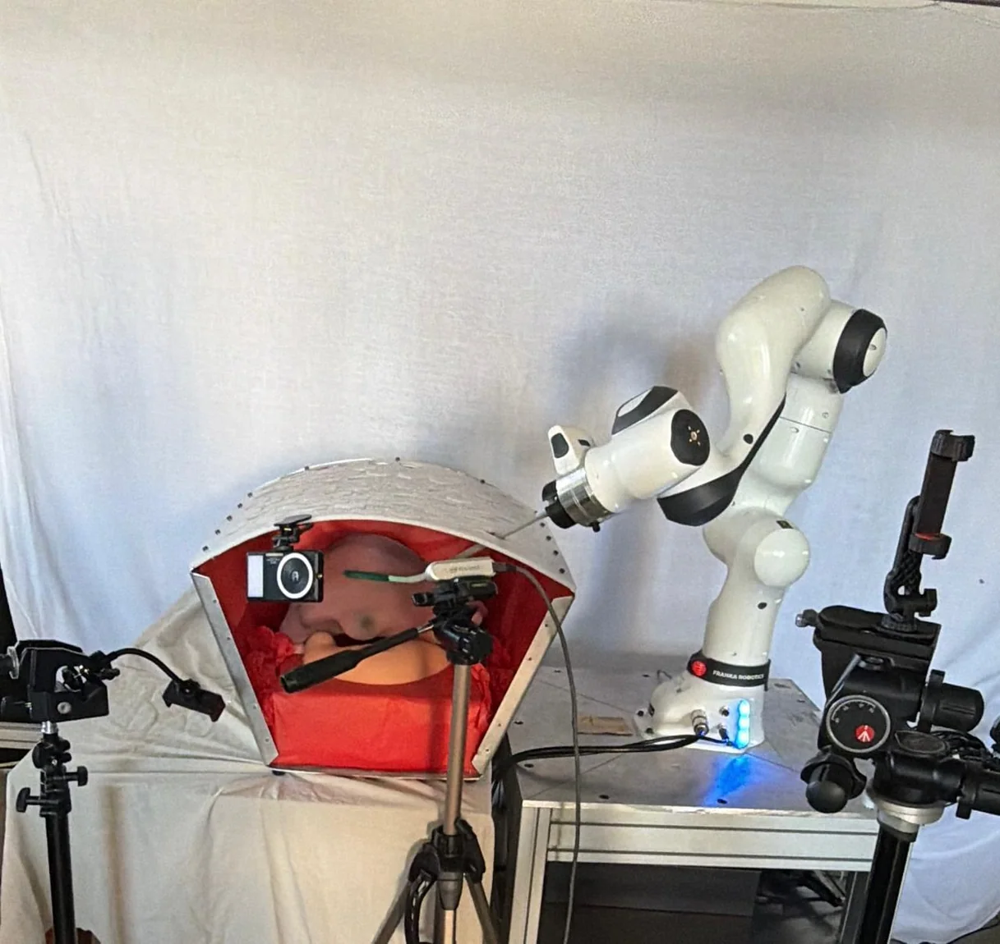

Desenvolvimento e avaliação experimental de uma plataforma de manipulação de sonda laparoscópica com restrição RCM e orientação visual RGB-D.
Institut Pascal · SIGMA Clermont2026

Plataforma Franka FR3 e simulador de fígado
01 / O desafio
O desafio
A manipulação robótica de uma sonda laparoscópica exige respeitar um ponto fixo de inserção e, ao mesmo tempo, corrigir o posicionamento a partir das imagens de uma câmera externa.
02 / Minha contribuição e metodologia
Minha contribuição e metodologia
Trabalhei com controle cartesiano de velocidade e impedância, implementação da restrição RCM, calibração eye-to-hand de câmera RealSense e servo-visão IBVS baseada em cinco características visuais. O controle por prioridade de tarefas mantém o ponto de inserção durante o movimento.
4/5ensaios selecionados com erro final de translação < 2 mm
< 0,3 mmresíduo máximo de RCM nos 5 ensaios selecionados
03 / Resultados e aprendizados
Resultados e aprendizados
Em cinco ensaios representativos em malha fechada, o erro de translação caiu de cerca de 55–129 mm para 0,08–2,51 mm. Quatro ensaios terminaram abaixo de 2 mm, com resíduo máximo de RCM inferior a 0,3 mm. Os dados dependem da cinemática do robô e da geometria configurada e não representam validação clínica.
LAnD / 2026
Pesquisa relacionada: LAnD e primeiro contato
O manuscrito em coautoria “Visual Servoing of a Laparoscopic Ultrasound Probe without a Target Image” apresenta o método LAnD, combinando orientação pelo cirurgião, IBVS, controle sob RCM e detecção de contato por força. Nos testes realizados pela equipe, o primeiro contato ocorreu a menos de 1 cm do ponto visado, com pico de força de 4,26 ± 0,38 N nos ensaios apresentados. Esses resultados correspondem ao sistema experimental e não representam validação clínica.